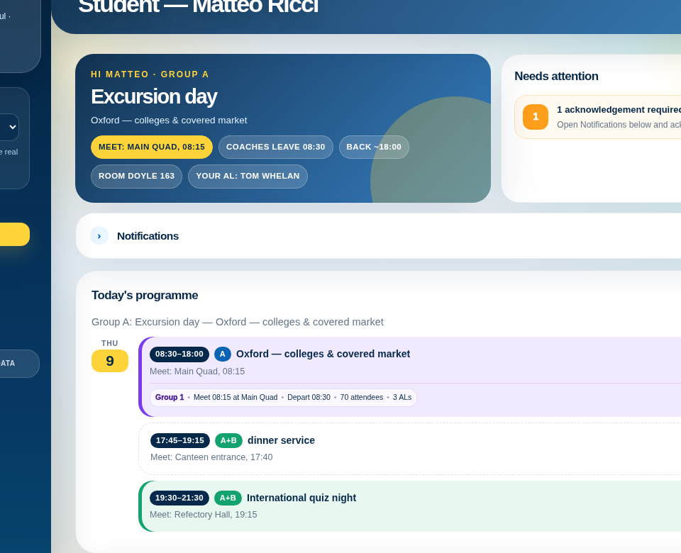

Make the real problem visible
Clarify users, workflows, constraints and the outcomes that matter before committing to a build.
Solutioning · value focus · delivery
RTS helps organisations turn operational complexity into useful digital products—combining structured solutioning, rapid prototyping and modern AI-enabled delivery with a steady focus on value.

The approach
RTS works where operational understanding, product design and technology delivery meet. The aim is not to introduce technology for its own sake, but to shape something clear, valuable and usable.
Clarify users, workflows, constraints and the outcomes that matter before committing to a build.
Define the service, journeys, information model and priorities through tangible prototypes.
Use suitable platforms and AI-assisted engineering to move quickly without losing control of quality.
Selected product work
LCOS is a SaaS product concept for language-camp operations. It brings programme planning, role-based daily views, excursion coordination and staffing control into one connected system.
Shared data and workflows replace fragmented spreadsheets and disconnected messaging.
Each person sees the decisions, actions and information relevant to their work.
Permissions, auditability and clear publishing states are considered from the outset.
What RTS does
Operational discovery, stakeholder alignment, requirements, service design and a clear path from problem to solution.
User journeys, information architecture and high-fidelity interactive prototypes that make decisions concrete.
Pragmatic use of AI development tooling to accelerate design, engineering, testing and iteration while retaining human judgement.
Architecture, platform choices, phased delivery plans and hands-on support to take an idea into a maintainable product.
A measured use of technology
RTS uses AI tooling where it creates genuine leverage: exploring options, shaping prototypes, accelerating implementation and improving consistency. The work remains anchored in user needs, operational reality and accountable decisions.
Richmond Technology Solutions
RTS works with organisations that have a meaningful operational problem, an emerging product idea, or a digital service that needs clearer direction.
contact@richmondts.com